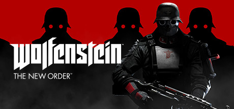
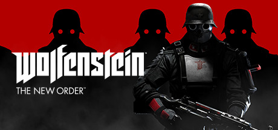

Machine Games was established in 2009 by former founding members of Starbreeze Studios and acquired by ZeniMax Media in 2010. Located in Uppsala, Sweden, MachineGames is a studio comprised of a seasoned group of developers recognized for their work creating story-driven games. Their first title, the critically-acclaimed action-adventure shooter, Wolfenstein: The New Order, is a reimagining of the franchise widely credited for helping establish the first-person shooter genre. Launched in May 2014, the game has garnered numerous "Game of the Year" and "Shooter of the Year" awards and nominations from media outlets worldwide.


On 5 November 2010, MachineGames was acquired by Bethesda Softworks' parent company ZeniMax Media, and was prematurely reported to have been renamed ZeniMax Sweden AB. MachineGames developed Wolfenstein: The New Order (2014) and its prequel, Wolfenstein: The Old Blood (2015), using the id Tech 5 game engine. In 2016, they released an additional episode free for the original Quake in celebration of 20th anniversary for the series. At E3 2017 Wolfenstein II: The New Colossus was announced with a release date of 27 October 2017 for Windows, PlayStation 4, and Xbox One.

President and CEO of MachineGames
one of the founders of Machinegames and also the CTO(chief technology officer)